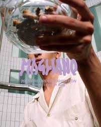

"MAGLIANO(マリアーノ)"
2016年にデザイナーLuca Magliano(ルカ・マリアーノ)によって設立。
マリアーノはイタリア・ボローニャ出身で、若干20歳にして自身のレーベルをスタートし、2017年に世界最大級のメンズプレタポルテ展示会Pitti Immagine Uomoにて、「Who's on next」を受賞。
MAGLIANOはワードローブの基本を再編集し、ミステリアスで奇妙なカットソープロセスが特徴。ブランドの根底には、フランケンシュタインからインスパイアされた思想やスタイルがデザインの細部から感じられ、現実主義の中の非現実的な魔法のようなエッセンスが感じられる。
